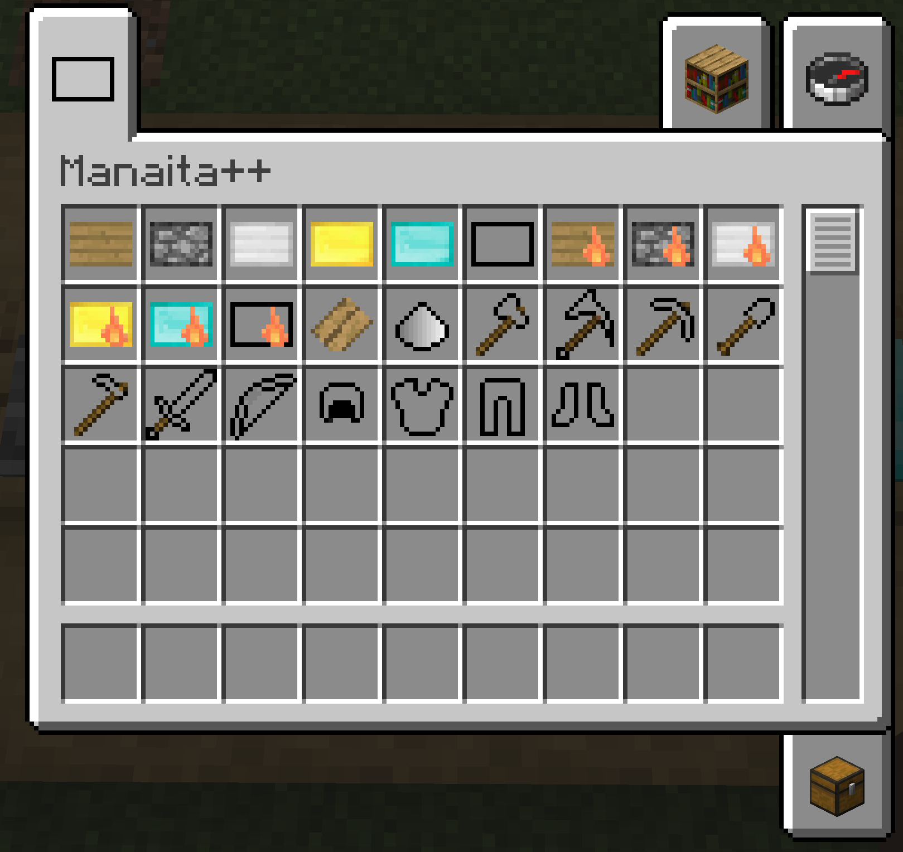
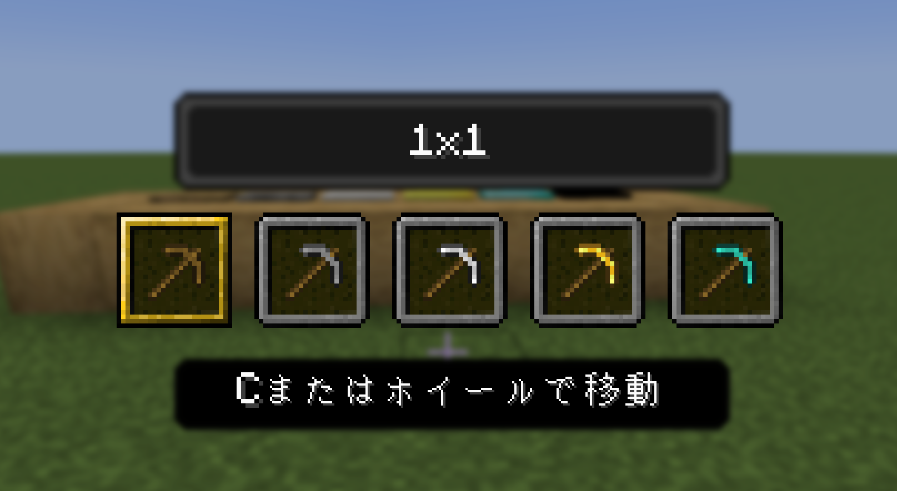
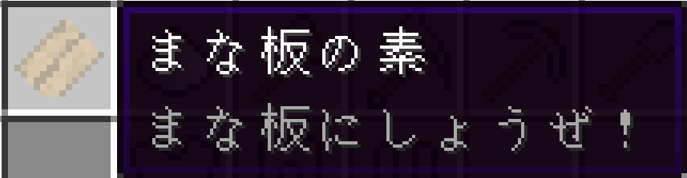
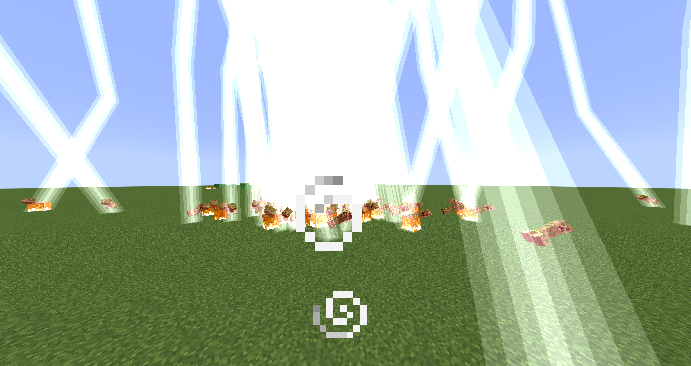

ServiceLoader
Commonから実装クラスを直接参照せず、ローダーごとの処理を切り替えます。
UNOFFICIAL REIMPLEMENTATION · 1.21.1
昔遊んだまな板MODを、今のMinecraftでも。懐かしい遊びを1から書き直した非公式の再実装です。

段階を選ぶと、その倍率をハイライトします。薄いのに、仕事量はどんどん厚くなります。
木のまな板：×2
装備、範囲採掘、特殊能力などを現在の環境へ再構成しています。




Minecraft 1.21.1向けに、Forge・Fabric・NeoForgeそれぞれへ対応しています。
ゲーム内の動作はCommonへ、Registry・Event・初期化などAPI差の大きい入口は各Loaderへ。添付の開発記録を、触れる経路図に整理しました。
Forge固有の登録処理へ接続します。
Commonから実装クラスを直接参照せず、ローダーごとの処理を切り替えます。
共通側は「何を登録するか」を宣言し、登録方法はLoader側へ任せます。
登録済みオブジェクトを、初期化順序に配慮しながらCommon側から参照します。
Registryのライフサイクル、イベント差、GUI通信、Gradle構成まで、マルチローダー化はアーキテクチャそのものへの挑戦でした。
Project with path ':common' could not be found
といったエラーを通して、コードだけでなくモジュール階層とビルド構成の整合性も学びました。